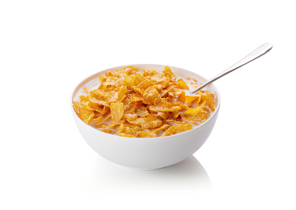

Cereal

Cereal is a very common food round the world that comes in a huge amount of varieties
In this tutorial we will be showing you how to make cereal.
Ingredients
- A bowl or cup
- A spoon
- Cereal of your choice
- Milk of any kind
- An appetite ;|
Steps
- Get Your Supplies - Buy all the supplies listed above.
- Grab your bowl or cup and pour your desired amount of cereal into the bowl.
- Pour your choice of milk into the bowl.
- MAKE SURE THAT YOU DO STEPS 2 BEFORE YOU DO STEP 3, UNLESS YOU'RE AN ANIMAL!
- Grab your spoon and enjoy.